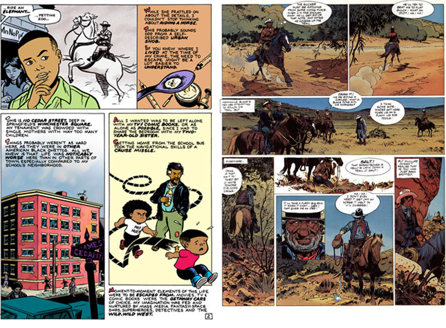

I'm coloring the new version of "Six-Year-Old Horse Thief". Out of all the elements of comics, coloring's been my weakest (those who've read my dialog might have a different opinion). This is my first attempt of addressing this issue with history and objective analysis. In order to move forward in any mission, you have to (a) be completely sick of the status quo and (b) have some ideal to compare your current output.
The comics I read are very sophisticated. The best use color to enhance the storytelling, without overpowering the line art. Looking at what I consider to be the best of old and new reveals the following methods (borrowing terms from The DC Comics Guide to Coloring and Lettering Comics):
Elements of creative coloring


Applying the lessons
Using this context, my natural coloring instincts lean heavily on predictable local color. However, I don't want to use most mainstream comics as a goal. Most are too slick, catering to a younger fanbase of superhero "enhanced realism". If I were a 14-year-old fanboy now, this approach would be right up my alley. At damn-near-50, this style has the exact opposite reaction.
Earlier this year, I experimented by coloring "GrubHub Delivery" with Chemical Color Plate 1970s pallet. Combining this with Photoshop's color halftone and scanned newsprint paper produced the desired retro feeling, but didn't solve the larger problem. I still didn't understand color the way I wanted. Since it's taking me forever to produce the 8-page story, color wasn't a top priority this year.

Then I stumbled on the Blueberry comics, drawn lettered & colored by Jean Giraud. Under the Epic imprint, Marvel Comics reprinted a ton of these in the '80s. For weeks I've been studying Book One: Chihuahua Pearl (1973) through Book Ten: End of the Trail (1983) and still don't understand how Giraud's doing it.
Compared to today's colorists, Giraud's palette is quaintly limited. Yet he's hitting every one of The DC Comics Guide to Coloring and Lettering Comics guidelines: focus, depth, decorative and selective realism. On top of this, he's adding another element: specific time of day. A lot of Blueberry scenes take place at dawn, dusk, high noon and candle/firelight. Accomplishing this with a limited pallet is like winning a fight with one arm.
Giraud started on Blueberry in 1965. That first book Fort Navajo wasn't nearly this sophisticated. Not having to duplicate 20 years of growth in two weeks takes a lot of pressure off. Where does this leave me? Somewhere between work, teaching, family and other comics projects, revising my "Six-Year-Old Horse Thief" colors a million times before showing you. This is one instance where a paycheck, editor and deadline would come in handy.
Your Pal Dave, somehow hearing tonight's '90s boy-band music at Inman Square's 1369 Coffee House